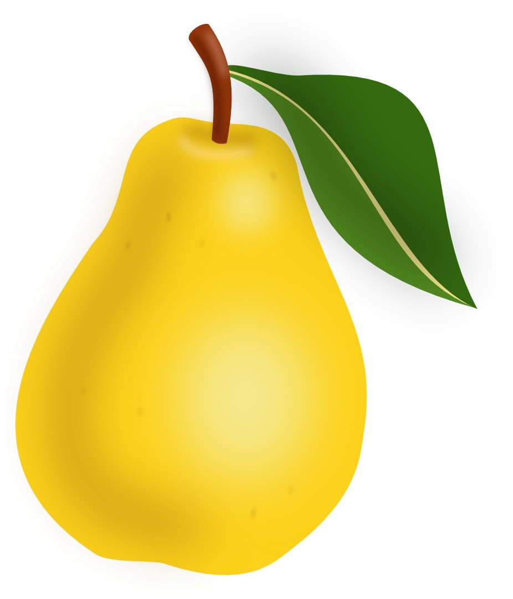

Этот рисунок находится слева и текст
Этот рисунок находится слева и текст выравнивается по левой границе. Эффект
достигается без таблицы.
Этот рисунок находится слева и текст
выравнивается по левой границе. Эффект
достигается без таблицы.
 Этот рисунок находится слева и текст
Этот рисунок находится слева и текст
выравнивается по центру. Эффект достигается без
таблицы.

Этот рисунок находится справа и текст
выравнивается по правой границе. Эффект
достигается без таблицы.